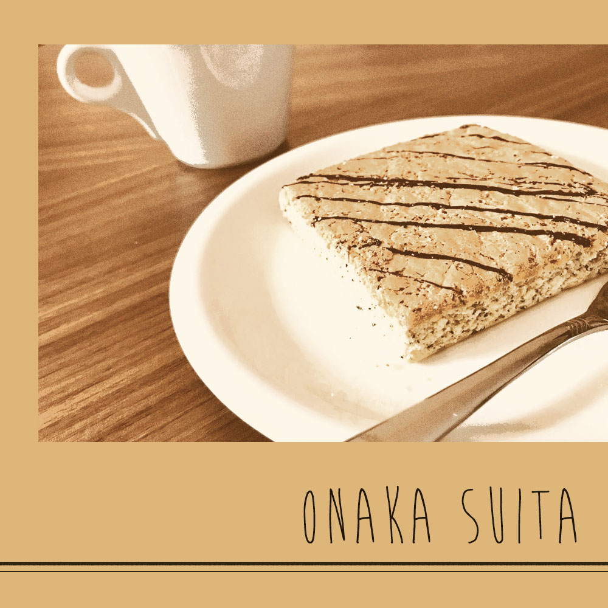
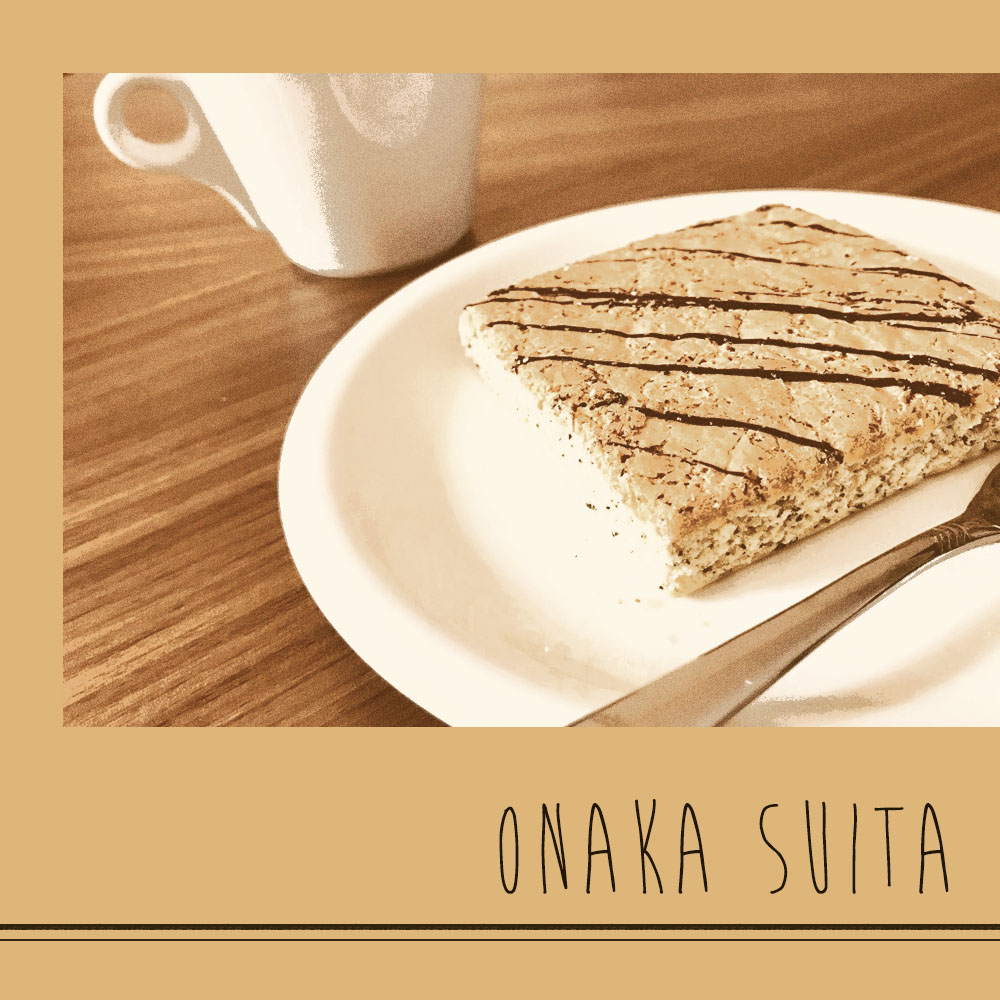

my learning progress
履修科目
前期
- ソフトウェアネットワーク演習Ⅰ
Photoshopで1000x1000pixelのトップページのメイン画像を作成。無印良品のお菓子を撮影し上の画像のように加工。
Illustratorで32x32pixelのオリジナルアイコンを作成。初めはoutlinedのゴミ箱アイコン、次にfilledのゴミ箱アイコンを作成。
後期
- ソフトウェアネットワーク演習Ⅱ
- クロステックデザイン演習Ⅱ
my learning progress
Photoshopで1000x1000pixelのトップページのメイン画像を作成。無印良品のお菓子を撮影し上の画像のように加工。
Illustratorで32x32pixelのオリジナルアイコンを作成。初めはoutlinedのゴミ箱アイコン、次にfilledのゴミ箱アイコンを作成。